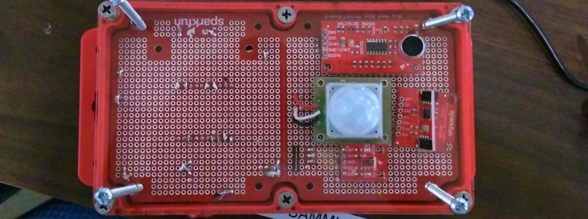

Fall 2017
eyeCU was a project sponsored by RedHat, Sparkfun, and the BTU Lab. It was an IoT sensor network spread out across the CU Boulder campus. It monitored air quality, light levels, and noise levels in particularly busy parts of campus.
You can check out the code and documentation on Github